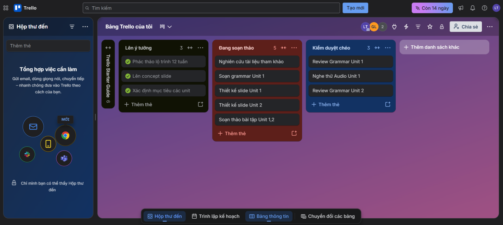
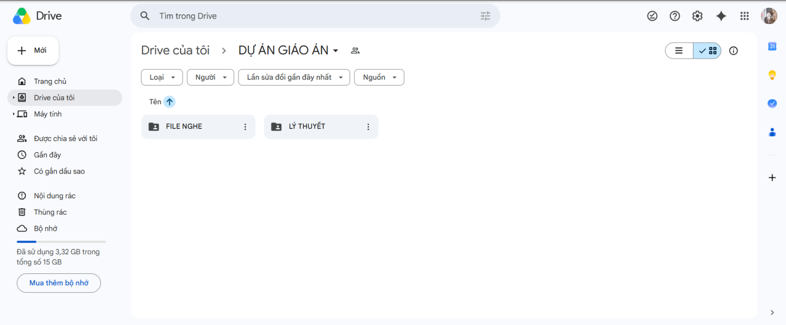
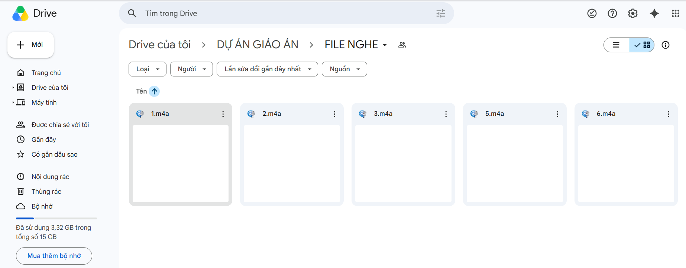
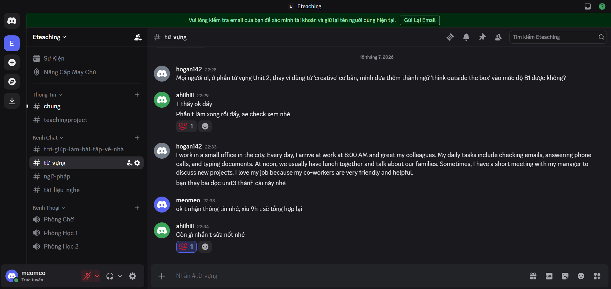

Trong bối cảnh giáo dục ngôn ngữ và công nghệ giáo dục (EdTech) ngày càng phát triển, việc ứng dụng các công cụ hợp tác trực tuyến không chỉ đơn thuần là để liên lạc mà đã trở thành nền tảng cốt lõi để xây dựng, thẩm định và quản lý hệ thống học liệu.
Trong học phần này, tôi đã tham gia vào một dự án nhóm nhỏ kéo dài 1 tuần với mục tiêu thiết kế trọn bộ giáo án chuẩn đầu ra A2-B1 với chủ đề "Tiếng Anh giao tiếp cho người đi làm". Dự án đặt ra mục tiêu hoàn thiện sản phẩm học thuật chung có tính ứng dụng cao, đồng thời rèn luyện cách phối hợp làm việc nhóm từ xa, phân quyền xử lý tài liệu và thể hiện rõ nét cá nhân trong quá trình phát triển chương trình giảng dạy (Curriculum Development).
1. Công cụ quản lý dự án — Trello — Nhóm quyết định chọn Trello để số hóa quy trình thiết kế bài giảng với tính năng bảng Kanban trực quan và phân công công việc (card) chi tiết. Bảng tiến độ được chia thành các danh sách theo quy trình chuyển giao: "Lên ý tưởng", "Đang soạn thảo", và "Kiểm duyệt chéo". Trên bảng Trello của nhóm, tôi đã được phân công và trực tiếp theo dõi các nhiệm vụ chuyên môn cụ thể:
- Nghiên cứu và trích xuất tài liệu Reading & Listening (từ các nguồn báo kinh tế và hội thoại thực tế).
- Soạn thảo chi tiết phần Ngữ pháp (Grammar) cho Unit 1-3, tập trung vào cấu trúc viết email và thuyết trình.
2. Công cụ lưu trữ — Google Drive — Khối lượng lớn các học liệu ngoại ngữ (đặc biệt là các file đa phương tiện) đã được quản lý tập trung trên Google Drive với cấu trúc phân tầng và phân quyền truy cập cực kỳ nghiêm ngặt:
- Lý thuyết (Định dạng Docs/PDF)
- File nghe (File âm thanh MP3/Video MP4 hội thoại)
3. Công cụ giao tiếp — Discord — Để tránh tràn tin nhắn như các ứng dụng chat thông thường và tạo không gian làm việc tương tác cao, nhóm thiết lập máy chủ (server) Discord "Eteaching" với các kênh văn bản (text channels) được phân chia bài bản theo từng chủ điểm học thuật: #chung, #teachingproject, #tro-giup-lam-bai-tap-voi-nhom, #tu-vung, #ngu-phap, #tai-lieu-nghe, cùng các kênh thoại (voice channels) như Phòng Chính, Phòng Học 1, Phòng Học 2.
Trong dự án, các đóng góp mang tính định lượng và định tính cụ thể của tôi bao gồm:
- Hoàn thành nhiệm vụ soạn lý thuyết Unit 1-3 và sưu tầm, cắt ghép audio Listening của Unit 1-3.
- Kiểm soát và tổng hợp tài liệu, đảm bảo tiến độ của các thành viên, kiểm tra thành phẩm làm việc.
Ưu điểm:
- Trello: Giao diện thẳng trực quan giúp dễ dàng nhận biết tiến độ công việc đang ở giai đoạn nào (Lên ý tưởng, Đang soạn thảo hay Kiểm duyệt chéo), biết rõ ai đang phụ trách task nào để phối hợp nhịp nhàng hơn.
- Google Drive: Giải quyết triệt để bài toán lưu trữ, giúp phân loại rõ ràng giữa mục Lý thuyết và File nghe. Định dạng file .m4a tải lần nhanh chóng, dễ dàng nghe thử trực tiếp trên trình duyệt mà không cần tải về.
- Discord: Phân chia kênh chủ đề chuyên sâu giúp các cuộc thảo luận về từ vựng hay ngữ pháp không bị loãng tin nhắn quan trọng nếu thành viên không bật thông báo (mention @everyone hoặc @here) đúng cách.
Nhược điểm:
- Trello: Khi số lượng công việc tăng lên, nếu không quy định rõ về mẫu sắc nhạn (labels) hoặc thời hạn (due date), bảng công việc dễ bị dày và khó quan sát tổng thể tiến độ của cả 12 tuần.
- Discord: Số lượng kênh văn bản và kênh thoại khá nhiều cả thể gây phân tâm hoặc bỏ lỡ tin nhắn quan trọng nếu thành viên không bật thông báo đúng cách.
Thách thức:
- Chất lượng đầu vào: Khá khó khăn trong việc tìm các nguồn tài liệu Nghe (Audio) gốc chuẩn bản xứ, không vi phạm bản quyền nhưng tốc độ nói phải phù hợp với trình độ A2-B1.
- Quản lý dữ liệu: Các file bài tập nhỏ lẻ và file âm thanh cắt ngọn rắc rối dễ bị lộn xộn, nhầm lẫn giữa mục Unit 1 và Unit 2.
Giải pháp:
- Giới hạn vùng tìm kiếm tại các trang uy tín được cấp phép chia sẻ cho giáo dục (như BBC Learning English, VOA, TED-Ed) và dùng phần mềm Audacity để chỉnh tốc độ (tempo) file nghe chậm lại 10%.
- Tạo thư mục riêng cho từng Unit, sắp xếp theo thứ tự rõ ràng.
Ảnh phân chia nhiệm vụ trên Trello:

Tổng hợp và sắp xếp nội dung trên Drive:


Ảnh đoạn chat Discord thể hiện thảo luận:

Qua bài tập thực hành xây dựng học liệu mô phỏng thực tế này, tôi nhận thức sâu sắc rằng việc thành thạo các công cụ hợp tác trực tuyến không chỉ đơn thuần giúp tăng tốc độ hoàn thành công việc, mà nay chính là một kỹ năng sư phạm thiết yếu trong thời đại giáo dục số (Digital Education).
Việc ứng dụng Trello, Google Drive và Discord đã rèn luyện cho tôi tư duy tổ chức thông tin mạch lạc, kỹ năng quản lý thời gian dự án, cách giao tiếp phản biện chuyên môn khéo léo và khả năng phối hợp nhịp nhàng trong một hội đồng học thuật.
Tôi đã tự tin hơn trong việc chủ động kiểm soát chất lượng nội dung và định hình được cấu trúc của một bộ giáo án chuyên nghiệp. Trong tương lai với vai trò là một người làm giáo dục, tôi chắc chắn sẽ tiếp tục áp dụng nhuần nhuyễn những kỹ năng thời công cụ này, đồng thời không ngừng cập nhật, tìm tòi thêm các nền tảng công nghệ giáo dục (EdTech) tiến tiến khác (như các công cụ AI hỗ trợ soạn bài) để tối ưu hóa quy trình thiết kế bài giảng và nâng cao chất lượng đào tạo.